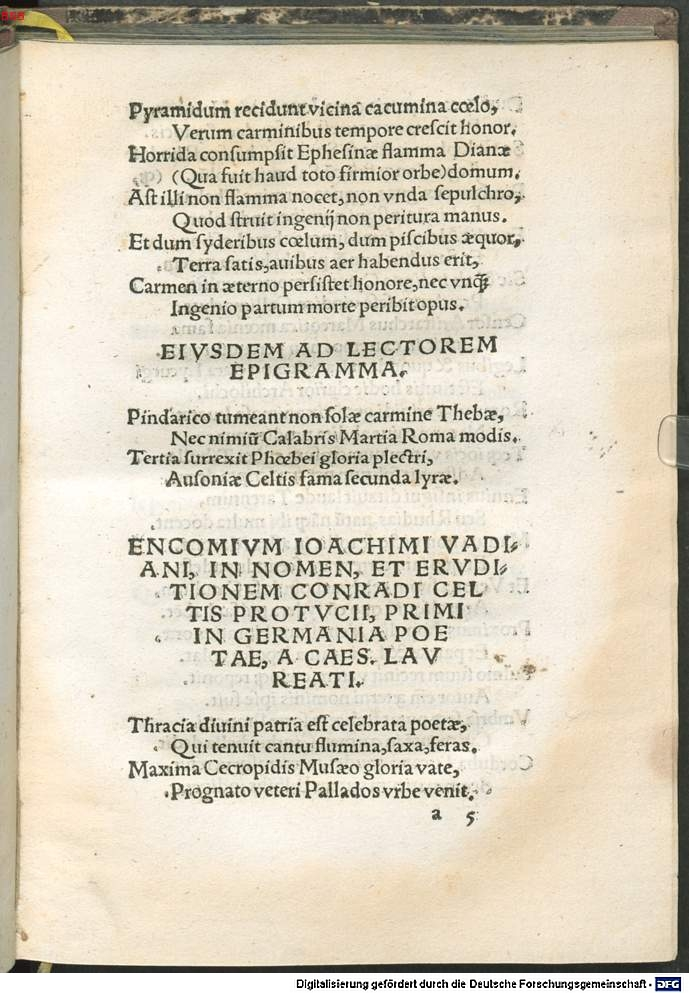

Celtis 9 (Joachim Watt)
Faksimile


Transkription
Encomium Ioachimi Vadiani, in nomen, et eruditionem Conradi Celtis Protucii, primi in Germania poetae, a Caesare Laureati.
Thracia divini patria est celebrata poetae,
Qui tenuit cantu flumina, saxa, feras.
Maxima Cecropidis Musaeo gloria vate,
Prognato veteri Pallados urbe venit.
Dumque caret patria certa, Iove natus Homerus,
Pluribus ex voto est, lausque, decusque locis.
Se Colophon iactat, se Smirna, Chiosque, Rhodosque,
Argos, Ionque suum cum Salamine volunt.
Pindarus exiguas cygneo carmine Thebas,
Et Linus insigni nomine tendit olor.
Extulit Alcaeus fama super aethera Lesbon,
Et Sapphus numquam post habitura parem.
Sic et ab indigna Cyrenas morte revulsit,
Praeclarus, sese vindice, Callimachus.
Censor Aristarchus Mareotica moenia fama
Cinxit, in extremos non pereunte rogos.
Legibus et quondam Lacedaemon clara Lycurgi
Est titulis hodie clarior Archilochi.
Roma viget rigidi genitrix animosa Lucreti,
Naturae cuius abdita prodit opus.
Teque iocis vatem numerosum enixa Tibulle
Adstruxit solitum per tua scripta decus.
Ennius insigni ditavit laude Tarentum,
Seu Rhudias, natum namque ibi multa docent.
Mantua non victo se tollit in astra Marone,
Et quo iam certet vate, secundus adest.
Et Verona suum celebrat populosa Catullum,
Atque aliquid quo cum sidera pulsat habet.
Proximus Appuliae Venusinus Horatius orae,
Et patriae et Latio fama leposque volat.
Sulmo suum recinit vatem, caeloque reponit.
Autor enim aeterni nominis ipse fuit.
Umbria seque putat felicem sorte Properti,
Cui mentem in carmen Cinthia bella dedit.
Corduba Lucano gaudet, numerosque veretur,
Scommaticum vatem Bilbilis indigetat.
Silius Italicae famae est, tibi Statius ampla
Parthenope, at primas ossa Maronis habent.
Persius et parvo patriam illustrasse libello
Creditur, et famae consuluisse suae.
Tersus Aquinatum decus est Iuvenalis abundans,
Esto etiam nullis luxerit ante viris.
Flacce tuo felix genio est Antenoris aula,
Fata licet mancum destituisse velint.
Sicque alios caelis vatum delapsa potestas
Laudis inextinctae per monumenta iuvat.
Sic vitam stilico sortitus carmine Claudi,
Vitam, quam rigidae non rapuere deae.
Celtis Apollineo praecinctus tempora serto,
Quem bona Calliope, quemque Thalia colit.
Inter Germanos fortassis Pindarus, et Thrax,
Et Linus, adcrescet Flaccus, et Archilochus.
Dum sibi prima lyrae referunt modulamina musae,
Dumque grave ac rarum primus adivit iter.
Is potuit patriae servare in saecla decorem
Vixit, et in laudes docta Vienna tuas.
Ore ubi facundo docuit, quae sidera possent,
Quae deus, et quicquid cardine mundus agit.
Quem memini gravibus quassantem pulpita pugnis,
Me iuventem in vultus saepe citasse suos.
Unde velut Phoebi fulgor rutilabat honestas,
Visque iocis, veri visque latentis erat.
Conscia seu veri premeretur fabula tecti,
Seu lucem gravior posceret historia.
Interpres gnarus, fandique aptissimus autor,
Inseruit Latiis Attica verba modis.
Celtis erat, Celtis, patriae ditique Viennae
Perpetuum nullo diripiente decus.
Quem puto Melpomene caelis, et Phoebus, Apollo
Non menso circum iugiter orbe ferunt.
Nectareosque haustus praebet sibi Iupiter ingens,
Sic terram fama, sidera mente tenet.
Übersetzung
Loblied des Joachim Watt auf den Namen und die Gelehrsamkeit des Konrad Celtis Protucius, des bedeutendsten Dichters Deutschlands, vom Kaiser lorbeergekrönt.
Thrakien wurde gerühmt als die Heimat des göttlichen Dichters, der durch seinen Gesang Flüsse, Felsen und wilde Tiere ergriff. Der größte Ruhm des Kekropiden kam durch den Seher Musaios, der der alten Stadt der Pallas entsprossen war. Und während er keine sichere Heimat besitzt, ist Homer, von Jupiter geboren, mehreren Orten Lob und Zier durch ein Denkmal. Kolophon rühmt sich <seiner>, Smyrna, Chios und Rhodos; Argos und sein Ion wollen <ihn> mit Salamis. Mit seinem Schwanenlied dehnte Pindar das unbedeutende Theben aus und Linos als Schwan ebenso mit seinem auffallendem Namen. Mit seinem Ruhm erhob Alkaios Lesbos über den Himmel empor, und auch Sappho, die danach niemals mehr eine Ebenbürtige haben würde. So entriss auch der überaus berühmte Kallimachos Kyrene einem unwürdigen Tod, durch sich als Beschützer. Der Kritiker Aristarchos umgab die mareotischen Mauern mit seinem Ruhm, der bis zum äußersten Ende nicht vergeht. Auch das einst durch die Gesetze Lykurgs berühmte Sparta ist heute berühmter durch die Verdienste des Archilochos. Rom, die stolze Erzeugerin des unerschütterlichen Lukrez, dessen Werk die Geheimnisse der Natur offenbart, steht in Ansehen. Und dich, Tibull, den rhythmenreichen Seher, den sie für Liebesspiele geboren hatte, fügte sie durch deine Schriften der gewohnten Zier hinzu. Ennius bereicherte Tarent mit herausragendem Lob oder Rudiae, denn <die Stadt> lehrte den dort Geborenen vieles. Mantua erhebt sich durch den unbesiegten Maro zu den Sternen und schon ist ein zweiter Seher da, mit dem er wetteifern kann. Und das reich bevölkerte Verona rühmt ihren Catull und hat etwas anderes, mit dem es an die Sterne stößt. Der nächste ist Horaz aus Venusia, von der Küste Apuliens, sowohl seiner Heimat als auch Latium fliegt sein Ruhm und Liebreiz dahin. Sulmo lässt seinen Seher erklingen, und versetzt ihn in den Himmel. Denn er selbst war der Urheber eines ewigen Namens. Auch Umbrien schätzt sich glücklich wegen des Schicksals des Properz, dem die schöne Cynthia ein Lied in den Sinn gab. Cordoba erfreut sich an Lukan und fürchtet seine Metren, Bilbilis ruft den spottenden Sänger an. Silius gereicht Italica zum Ruhm <und> dir, hohes Neapel, Statius, aber den bedeutendsten <Ruhm> haben die Gebeine des Maro inne. Persius soll seine Heimat auch mit einem kleinen Büchlein Glanz verliehen und für seinen Ruhm gesorgt haben. Der feine Juvenal ist die überreiche Zier der Aquinier, mag er auch vorher unter keinen Männern hervorgeleuchtet haben. Glücklicher Flaccus, dein Genius erfüllt die Halle des Antenor, wenn das Schicksal den Gebrechlichen auch im Stich gelassen haben mag. Und so erfreut die vom Himmel herabgeschwebte Macht der Dichter die anderen durch Denkmäler unauslöschlichen Lobs. So hat Stilicho im Lied des Claudius sein (Nach-)Leben erlangt, ein Leben, das die harten Göttinnen ihm nicht raubten. Celtis ist an den Schläfen bekränzt mit dem Kranz des Apoll, den die gute Kalliope und Thalia verehren. Vielleicht werden unter den Deutschen ein Pindar und ein Orpheus, ein Linos, ein Flaccus und ein Archilochos heranwachsen. Solange die Musen die ersten Melodien seiner Lyra widerhallen lassen und solange er als erster den beschwerlichen und selten <betretenen> Weg auf sich genommen hat. Dieser konnte der Heimat die Zierde auf Jahrhunderte bewahren und mit deinem Lob lebte er, gelehrtes Wien. Dort lehrte er in gewandter Rede, was die Sterne vermochten, was (ein) Gott und was auch immer die Welt am Pol antreibt. Ich erinnere mich, dass dieser mit schweren Fäusten auf sein Redepult schlug und mich als Jüngling häufig zu sich gerufen hatte. Dann glänzte sein Ansehen wie das Strahlen des Phoebus und Kraft lag in seinen Scherzen, die Kraft einer verborgenen Wahrheit. Wenn entweder die Fabel im Bewusstsein der versteckten Wahrheit bedrängt wurde, oder eine ernstere Erzählung Klarheit forderte. Als kundiger Erklärer und zum Erzählen geeignetster Autor flocht er lateinischen Versen attische Worte ein. Celtis war's, Celtis, seiner Heimat und dem reichen Wien eine ewige Zierde, die nichts zerstören <kann>. Diesen tragen, glaube ich, Melpomene und Phoebus Apollo im Himmel fortwährend ringsherum, wobei der Erdkreis nicht durchschritten wird. Und der gewaltige Jupiter bietet ihm Schlucke von Nektar an, so hält er die Erde durch seinen Ruhm und die Sterne durch seinen Geist im Bann.
Metadaten
| Titel des Gedichts: | Encomium Ioachimi Vadiani, in nomen, et eruditionem Conradi Celtis Protucii, primi in Germania poetae, a Caesare Laureati. |
| Autor der Gedichts: | Joachim Watt (Joachim Vadianus) |
| Containerwerk: | Conradi Celtis Protucii, primi in Germania poetae coronati, libri Odarum quattuor, cum Epodo, et saeculari carmine diligenter et accurate impressi, et hoc primum typo in studiosorum emolumentum editi, Straßburg 1513 |
| Autor des Containerwerks: | Konrad Celtis (Conradus Celtis) |
| Gattung des Containerwerks: | Lyrik, Oden, Epoden, Carmen saeculare |
| Erscheinungsjahr: | 1513 |
| Verschlagwortung: | Poetologie, Nachruhm, Unsterblichkeit, Dichtung, Nationalstolz, aemulatio, Homer, Pindar, Archilochos, Linos, Alkaios, Kallimachos, Sappho, Ennius, Vergil, Lukrez, Tibull, Catull, Horaz, Ovid, Properz, Lukan, Martial, Silius Italicus, Persius, Iuvenal, Valerius Flaccus, Apoll, Wien, Unterricht, Dichterkrönung, Musen |